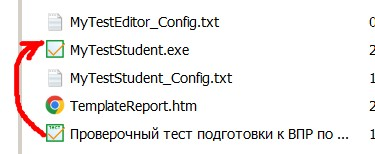

Арифметические основы работы компьютера
Системы счисления, решение задач для подготовки к ВПР
Цели
- Обобщить знания учащихся по теме: Системы счисления
- Разобрать приёмы перевода чисел из одной системы счисления в другую
- Закрепить навыки перевода в
различные системы счисления
- Формировать умения перевода числа из одной системы счисления в другую
Инструменты:
- ОС Windows
- Браузер
- Калькулятор
Задание 1.
Укажите наименьшее четырёхзначное шестнадцатеричное число, двоичная запись которого содержит ровно 6 нулей. В ответе запишите только само шестнадцатеричное число, основание системы счисления указывать не нужно.
Решение
Четырёхзначное, значит, в двоичной записи оно не меньше 100016 = 1 0000 0000 00002. Чем старше разряд, тем больше он прибавляет к числу. Поэтому нули стоит ставить именно в старшие разряды. Итого получим 1 0000 0011 11112 = 103F16.
Примечание:Число 81F не подходит, так как необходимо найти четырёхзначное шестнадцатеричное число.
Задание 2. Проверь себя, реши самостоятельно.
Укажите наименьшее четырёхзначное шестнадцатеричное число, двоичная запись которого содержит ровно 5 нулей. В ответе запишите только само шестнадцатеричное число, основание системы счисления указывать не нужно.
ПроверкаТеория к заданию
Если основание новой системы счисления (a) в 10 сс имеет некоторую степень, то при переводе этого числа в систему счисления, показатель степени (n) даст количество нулей после 1

Например:
в 2 системе счисления будет
в 3 системе счисления будет
в 4 системе счисления будет
в 7 системе счисления будет
При сложение число встает в хвост степени
Значение арифметического выражения: – записали в системе счисления с основанием 2. Сколько цифр «0» и «1» содержится в этой записи?
Для примера возьмем 10 систему счисления:
По анологии решим нащу задачу
Ответ: Цифр
«0» содержится 6, цифр
«1» содержится 5
Задание 3.
Сколько единиц содержится в двоичной записи значения выражения: 4 2020 + 22017 – 15?
Решение.
Преобразуем выражение:
4 2020+22017-15=(22020)2+22017-15=24040+22017-24+20
Число 2 4040 в двоичной записи записывается как единица и 4040 нулей. Добавив число 22017, получаем 100...00100...000 (единица, 2022 нулей, единица, 2017 нулей, всего 4041 разрядных цифр). Если вычесть из этого числа 24 = 100002 и прибавить 20, то число примет вид 100...001...10001. В полученном числе единица, 2023 нуля, 2013 единиц, три нуля и одна единица. Значит, всего в числе 2015 единиц.
Задание 4.
Сколько единиц в двоичной записи десятичного числа 127?
Решение.
Переведем число из десятичной системы счисления в двоичную: нужно делить его на 2, пока делимое не будет меньше 2. После запишем остатки от деления начиная с конца. У нас получится число 1111111. Число содержит 7 единиц.
Ответ: 7.Задание 5.
Сколько существует натуральных чисел x, для которых выполняется неравенство 100110112 < x < 100111112?
В ответе укажите только количество чисел, сами числа писать не нужно ?
Решение.
Переведём числа в десятичную систему счисления:
10011011 2 = 15510
10011111 2 = 15910
Между числами 155 и 159 лежит три натуральных числа.
Ответ: 3.
Задание 6.
8 задание из ЕГЭ по информатике
2021. Данный
тип заданий включает в себя нахождение количества вариантов,
элементы комбинаторики и другие математические понятия.
Задача
Все 4-буквенные слова,
составленные из
букв А, Е, И, О записаны в алфавитном порядке и пронумерованы. Вот
начало
списка:
1. АААА
2. АААЕ
3. АААИ
4. АААО
5. ААЕА
...
Запишите слово, стоящее на
248-м месте
от начала списка.
Решение.
Обозначим условно А - 0, Е - 1, И - 2, О - 3.
Важно: Нужно
буквам присваивать цифры именно в том порядке, в котором они идут в
самом
правом столбце, потому что буквы могут дать в "перепутанном порядке"
(например Е, А, И, О), и тогда ничего не получится.
Запишем
список с помощью цифр.
1. 0000
2.
0001
3.
0002
4.
0003
5.
0010
...
Получился
обычный счёт в четверичной
системе!! (всего используются 4 цифры: 0, 1, 2, 3). А слева
нумерация
показывает соответствие нашей десятичной системе. Но все
числа
десятичной системы в этой таблице
соответствия сдвинуты на 1,
ведь мы должны были начать с нуля.
Получилось число 33134 в
четверичной системе. Сделаем обратное декодирование в буквы. Таким
образом,
ответ будет ООЕО.
Ответы: ООЕО
Для
запуска
теста: Откройте
в
проводнике  папку
1_semestr\1_semestr\tema_4\Проверочный тест подготовки к ВПР по СС
папку
1_semestr\1_semestr\tema_4\Проверочный тест подготовки к ВПР по СС
Перетащите файл тестовых вопросов на файл приложения MyTestStudent.exe

Запустите
тест; 
Выполнение заданий по решению задач на знание систем счисления, решение запишите в конспект;
Сделайте скринн (PrtScr) экрана с результатом прохождения теста, вставьте его в документ Word, сохраните документ в папке с номером своей группы. Покажите файл со скрином преподавателю